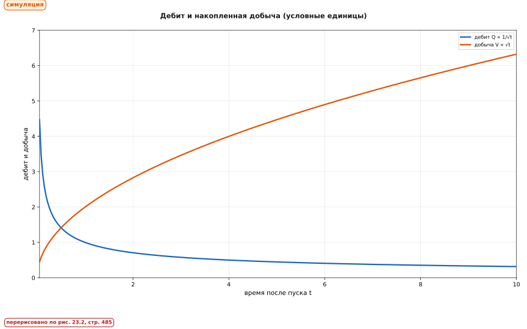

Путь › Как управление галереей меняет давление и отбор › Шаг 23 из 60
От дебита к добытому объёму
В книге: «Прямолинейно-параллельный фильтрационный поток упругой жидкости» стр. 485
Опирается на: шаг 22 «Как градиент превращается в дебит» (предпосылка)
Суть
Накопленную добычу получают, интегрируя дебит по времени от пуска.
При постоянном давлении на галерее она растёт как корень из времени: сначала быстро, потом медленно.
Падающий дебит не означает падающей добычи.
Пороговая идея. Падающий дебит не означает падения накопленной добычи. модель
Разбор источника
Определите, где наблюдение, вывод или допущение. Раскройте утверждение, чтобы свериться с ответом и цитатой.
Накопленная добыча — объём нефти, добытый к выбранному моменту.
Наблюдение · стр. 485
«Накопленная к моменту $t$ добыча (объем добытой нефти) $V_{доб}$ определяется по формуле»
Накопленную добычу вычисляют интегрированием дебита от пуска до текущего времени.
Вывод · стр. 485
«$$V_{доб} = \int_0^t Q(t)dt = \frac{k(p_к - p_г)Bh}{\mu\sqrt{\pi\kappa t}} \int_0^t \frac{dt}{\sqrt{t}} = \frac{2k(p_к - p_г)Bh}{\mu\sqrt{\pi\kappa}} \sqrt{t},$$»
При заданном постоянном давлении накопленная добыча пропорциональна корню из времени.
Вывод · стр. 485
«$$V_{доб} = \int_0^t Q(t)dt = \frac{k(p_к - p_г)Bh}{\mu\sqrt{\pi\kappa t}} \int_0^t \frac{dt}{\sqrt{t}} = \frac{2k(p_к - p_г)Bh}{\mu\sqrt{\pi\kappa}} \sqrt{t},$$»
Сразу после начала отбора накопленная добыча растёт быстро.
Вывод · стр. 485
«т.е. сразу после начала отбора из галереи она быстро возрастает, а в дальнейшем растет очень медленно (рис. 23.2).»
Позже накопленная добыча продолжает расти, но медленно.
Вывод · стр. 485
«т.е. сразу после начала отбора из галереи она быстро возрастает, а в дальнейшем растет очень медленно (рис. 23.2).»
На рисунке показаны дебит и накопленная добыча после пуска при постоянном давлении.
Наблюдение · стр. 485
«Рис. 23.2. Зависимости дебита и добычи жидкости от времени после пуска галереи при условии $p_г = \text{const}$»
Как это работает
Что считают
Накопленная добыча — объём нефти, добытый к выбранному моменту. стр. 485
«Накопленная к моменту $t$ добыча (объем добытой нефти) $V_{доб}$ определяется по формуле»
Её вычисляют интегрированием дебита от пуска до текущего времени. стр. 485
«$$V_{доб} = \int_0^t Q(t)dt = \frac{k(p_к - p_г)Bh}{\mu\sqrt{\pi\kappa t}} \int_0^t \frac{dt}{\sqrt{t}} = \frac{2k(p_к - p_г)Bh}{\mu\sqrt{\pi\kappa}} \sqrt{t},$$»
Как она растёт
При постоянном давлении накопленная добыча пропорциональна корню из времени. стр. 485
«$$V_{доб} = \int_0^t Q(t)dt = \frac{k(p_к - p_г)Bh}{\mu\sqrt{\pi\kappa t}} \int_0^t \frac{dt}{\sqrt{t}} = \frac{2k(p_к - p_г)Bh}{\mu\sqrt{\pi\kappa}} \sqrt{t},$$»
Сразу после начала отбора она растёт быстро. стр. 485
«т.е. сразу после начала отбора из галереи она быстро возрастает, а в дальнейшем растет очень медленно (рис. 23.2).»
Позже она продолжает расти, но медленно. стр. 485
«т.е. сразу после начала отбора из галереи она быстро возрастает, а в дальнейшем растет очень медленно (рис. 23.2).»
Дебит у пуска неограниченно велик, но его интеграл конечен. Поэтому добыча начинается с нуля. стр. 485
Рисунок
На рис. 23.2 показаны дебит и накопленная добыча после пуска при постоянном давлении. стр. 485
«Рис. 23.2. Зависимости дебита и добычи жидкости от времени после пуска галереи при условии $p_г = \text{const}$»
Дебит падает, а добыча растёт. Положительный дебит всегда добавляет объём, только всё медленнее. стр. 485

По шагам
Как получить добычу
- Запишите дебит при неизменном давлении. стр. 485
- Проинтегрируйте его по времени от пуска. стр. 485
- Сопоставьте растущий объём и убывающий дебит. стр. 485
Формулы
Накопленная добыча в режиме постоянного давления; лишний корень времени вне промежуточного интеграла удалён, чтобы согласовать с дебитом и результатом. стр. 485
| Обозначение | Что это | Единицы |
|---|---|---|
| $V_{\mathrm{доб}}$ | накопленная добыча жидкости | м³ |
| $Q$ | объёмный дебит галереи | м³/с |
| $t$ | время от пуска | с |
| $\tau$ | переменная интегрирования по времени | с |
| $k$ | проницаемость пласта | м² |
| $p_к$ | начальное и контурное давление | Па |
| $p_г$ | давление галереи | Па |
| $B$ | ширина пласта | м |
| $h$ | толщина пласта | м |
| $\mu$ | динамическая вязкость жидкости | Па·с |
| $\pi$ | число пи | безразмерно |
| $\kappa$ | коэффициент пьезопроводности | м²/с |
Частая ошибка модель
Ошибка: Когда дебит падает, суммарная добыча тоже падает.
На самом деле: При положительном дебите объём продолжает накапливаться, только скорость накопления падает. стр. 485
Что это значит для данных
Временной ряд дебита и накопленный объём — разные показатели.
- Вход
- Дебит от пуска либо параметры его формулы.
- Выход
- Накопленный объём к выбранному времени.
- Где ломается
- Этот аналитический закон относится к постоянному давлению на галерее.
Где здесь ручной труд специалиста
- Входные данные
- Дебит от пуска либо параметры его формулы.
- Ручные шаги
- Отличить дебит от суммарного объёма, записать время от пуска и проверить единицы.
- Точки суждения
- Отдельно принять решение об обработке интервала вблизи пуска.
- Время
- Проверка первого интервала важнее вычисления накопительной кривой.
- Типичные ошибки
- Принять накопленный объём за объём за отдельный период.
Аналогия модель
Объём — накопительная сумма по времени, дебит — темп добавления.
Где аналогия перестаёт работать: Непрерывный закон имеет особенность в точке пуска; нельзя умножить бесконечный начальный дебит на длительность отсчёта.
Глубже
Проверка расходящейся точки и промежуточного шага модель
Хотя дебит неограниченно возрастает при приближении к пуску, его интеграл конечен. В промежуточном множителе строки источника под корнем стоит лишнее время: если его оставить, получится неправильная размерность добычи и не получится приведённый конечный результат.
Рисунки книги к этому шагу
- Рис. 23.2. Рис. 23.2. Зависимости дебита и добычи жидкости от времени после пуска галереи при условии $p_г = \text{const}$ стр. 485 (не перерисован — смотрите в книге)
Новые понятия
- Галерея (gallery)
- Линейная выработка, через которую в этой задаче отбирают жидкость из пласта. модель
- Накопленная добыча (cumulative production)
- Объём жидкости, добытый за время с начала отбора. модель
- Дебит (volumetric flow rate)
- Объём жидкости, отбираемый за единицу времени. модель
- Пьезопроводность (hydraulic diffusivity)
- Способность среды передавать изменения давления диффузионным образом; коэффициент имеет размерность площади, делённой на время. модель
- Проницаемость (permeability)
- Свойство пористой среды пропускать жидкость под действием перепада давления. модель
Проверь себя
Верный ответ: Растёт, но всё медленнее
Добыча растёт как корень из времени: сначала быстро, потом медленно. Где это в тексте (стр. 485) →
Заполните пропуск.
При постоянном давлении накопленная добыча пропорциональна из времени.
Верный ответ: При постоянном давлении накопленная добыча пропорциональна [корню] из времени.
Интеграл от 1/√t даёт √t. Где это в тексте (стр. 485) →
Источник
Все утверждения шага с дословной цитатой автора и страницей книги (по PDF).
Накопленная добыча — объём нефти, добытый к выбранному моменту. наблюдение
«Накопленная к моменту $t$ добыча (объем добытой нефти) $V_{доб}$ определяется по формуле»
Накопленную добычу вычисляют интегрированием дебита от пуска до текущего времени. вывод
«$$V_{доб} = \int_0^t Q(t)dt = \frac{k(p_к - p_г)Bh}{\mu\sqrt{\pi\kappa t}} \int_0^t \frac{dt}{\sqrt{t}} = \frac{2k(p_к - p_г)Bh}{\mu\sqrt{\pi\kappa}} \sqrt{t},$$»
При заданном постоянном давлении накопленная добыча пропорциональна корню из времени. вывод
«$$V_{доб} = \int_0^t Q(t)dt = \frac{k(p_к - p_г)Bh}{\mu\sqrt{\pi\kappa t}} \int_0^t \frac{dt}{\sqrt{t}} = \frac{2k(p_к - p_г)Bh}{\mu\sqrt{\pi\kappa}} \sqrt{t},$$»
Сразу после начала отбора накопленная добыча растёт быстро. вывод
«т.е. сразу после начала отбора из галереи она быстро возрастает, а в дальнейшем растет очень медленно (рис. 23.2).»
Позже накопленная добыча продолжает расти, но медленно. вывод
«т.е. сразу после начала отбора из галереи она быстро возрастает, а в дальнейшем растет очень медленно (рис. 23.2).»
На рисунке показаны дебит и накопленная добыча после пуска при постоянном давлении. наблюдение
«Рис. 23.2. Зависимости дебита и добычи жидкости от времени после пуска галереи при условии $p_г = \text{const}$»
На этот шаг опираются: шаг 22 «Как градиент превращается в дебит».